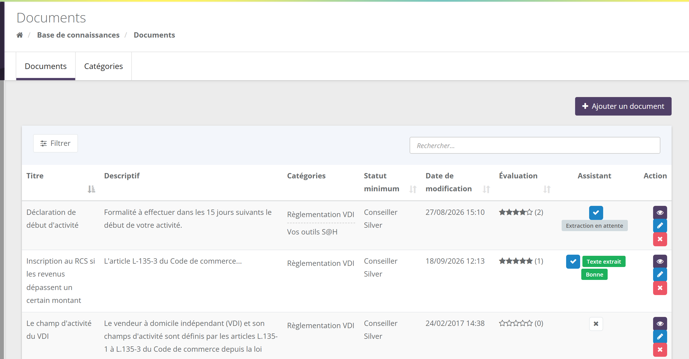
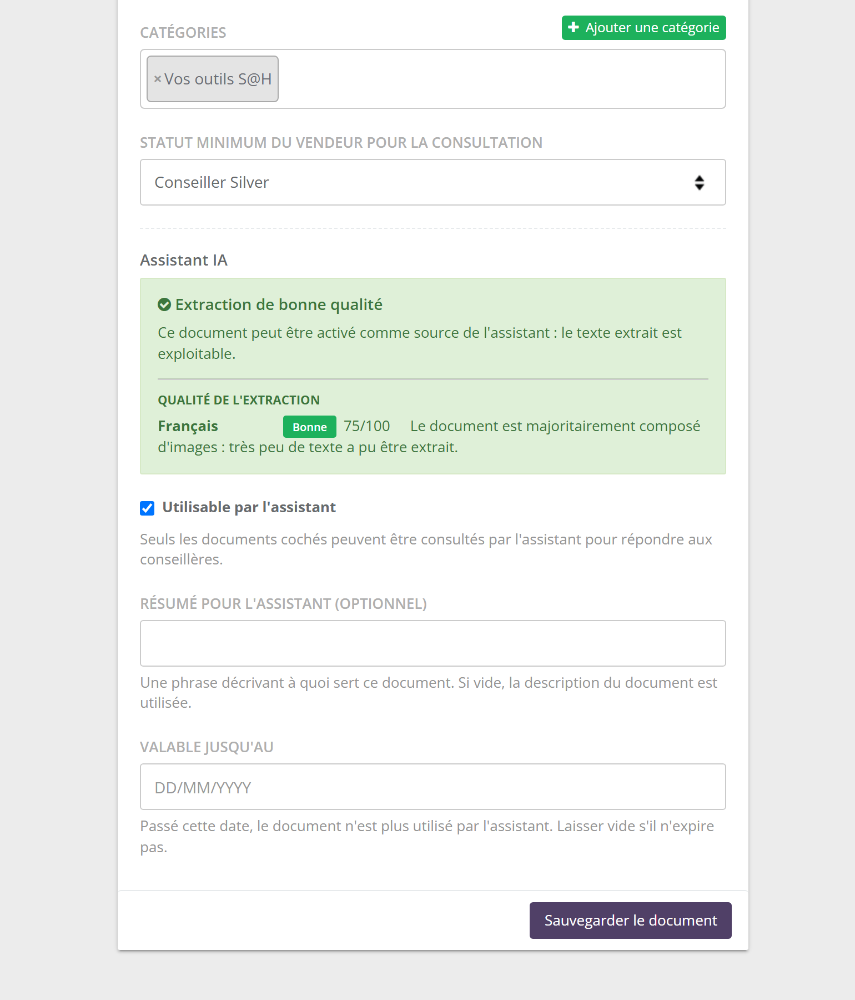
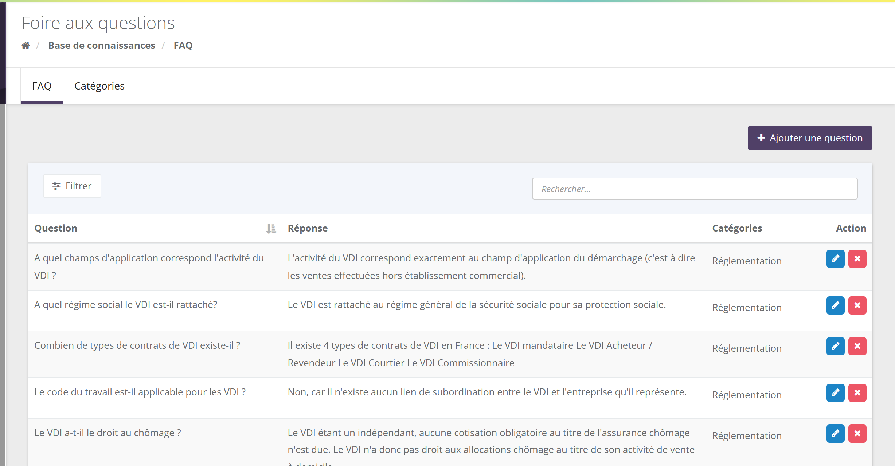
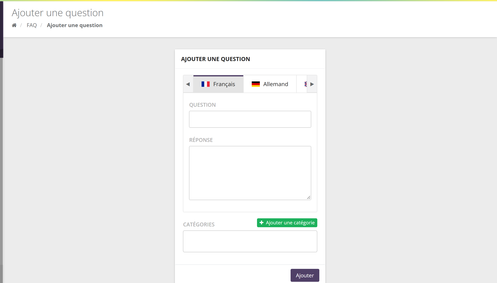
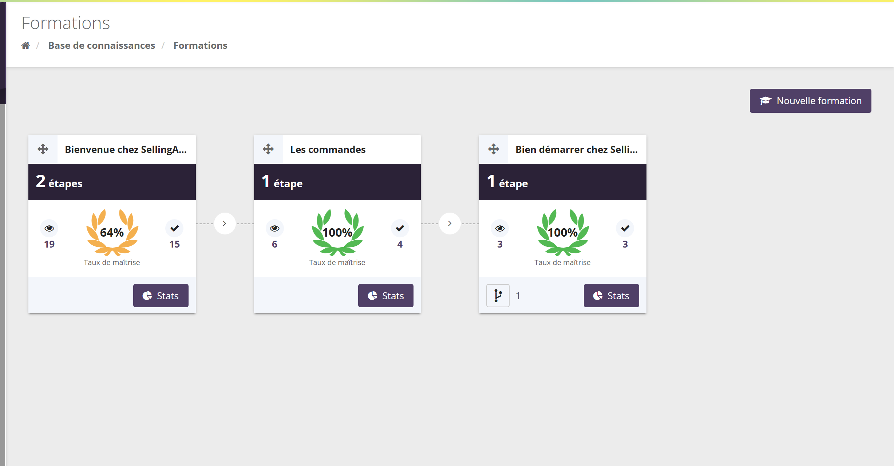
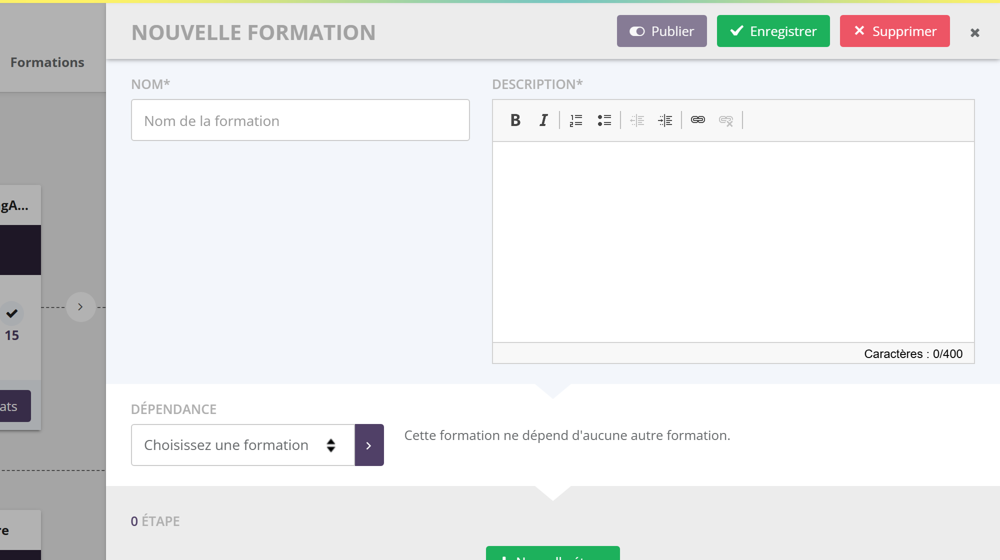
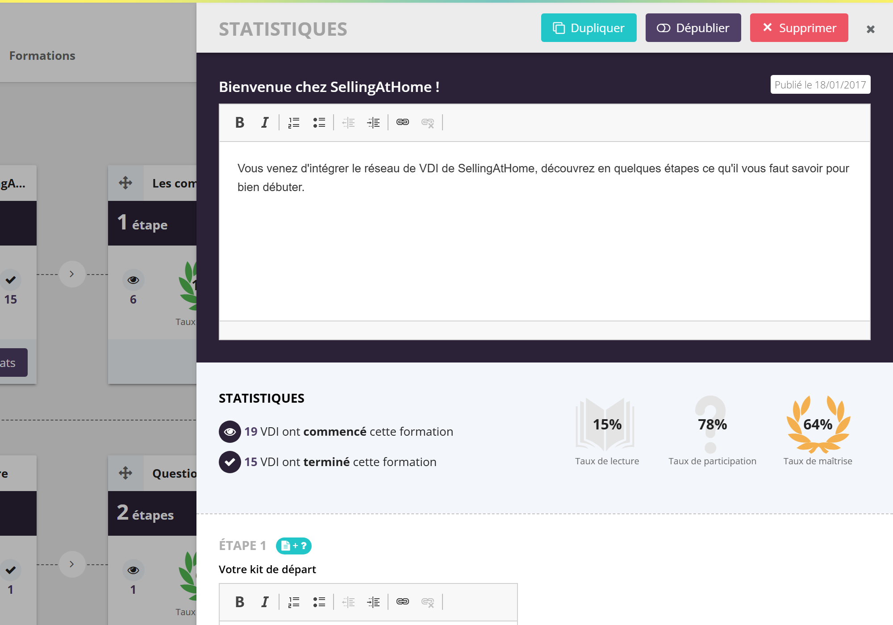
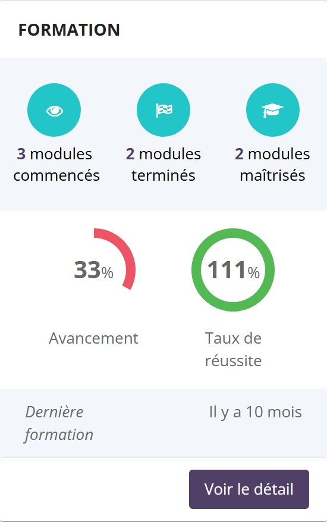

À quoi ça sert ?
La base de connaissances est la bibliothèque de votre réseau. Vous y déposez une fois l'information, et chaque conseillère la retrouve dans son espace, au moment où elle en a besoin.
Des fichiers à consulter
Catalogues, argumentaires, procédures, fiches réglementaires… classés par catégories, avec un accès réservé si besoin aux statuts les plus élevés.
Des réponses officielles
Les questions que vos conseillères posent le plus souvent, avec la réponse validée par la marque, dans chaque langue.
Des parcours notés
Des étapes (document, vidéo, questionnaire) à suivre dans l'ordre, avec des points, des prérequis et des statistiques de réussite.
Léa vient d'entrer dans le réseau. Dans sa base de connaissances, elle télécharge le catalogue de la saison, lit dans la FAQ comment déclarer son activité, puis suit la formation « Bien démarrer » : un PDF de présentation suivi d'un questionnaire de 10 points. Elle obtient 8 points : la formation suivante, qui exige 7 points, se débloque.
Dans l'espace marque, les conseillères sont appelées vendeurs (ou VDI). Le « statut minimum du vendeur » désigne donc le statut de la conseillère.
Où la trouver
Chacune des trois rubriques est un module qui s'active séparément : le menu « Base de connaissances » n'affiche que les rubriques activées pour votre marque, et la conseillère voit les mêmes rubriques dans son propre menu « Base de connaissances ». Si une rubrique vous manque, demandez son activation à SellingAtHome.
Les documents
3.1 La liste

| Colonne | Ce qu'elle montre |
|---|---|
| Titre, Descriptif | Le titre et la description du document dans votre langue. |
| Catégories | Les catégories auxquelles le document est rattaché (un document peut en avoir plusieurs). |
| Statut minimum | Le statut à partir duquel une conseillère voit le document (« - » = toutes les conseillères). |
| Évaluation | La note moyenne sur 5 étoiles donnée par les conseillères, et le nombre de votes entre parenthèses. |
| Assistant | Uniquement si l'assistant IA est actif pour votre marque : la coche indique si le document peut servir à l'assistant, suivie de l'état de lecture du fichier (voir 3.4). Un clic sur la coche active ou désactive le document sans ouvrir sa fiche. |
| Action | Ouvrir le fichier, modifier, supprimer. |
Le bouton Filtrer permet de ne garder que certaines catégories ou certains statuts minimum, ou au contraire les Documents sans catégorie et les Documents sans statut minimum.
3.2 Ajouter un document
- Cliquez sur Ajouter un document.
- Pour chaque langue de votre marque (un onglet par langue) : saisissez le Titre, la Description, puis Ajouter un fichier. Le fichier est choisi ou déposé dans l'explorateur de fichiers de la marque (100 Mo maximum par fichier). Chaque langue peut avoir son propre fichier.
- Choisissez une ou plusieurs Catégories (le bouton Ajouter une catégorie en crée une sans quitter la page).
- Choisissez le Statut minimum du vendeur pour la consultation, ou laissez « - ».
- Si l'assistant IA est actif, réglez le bloc Assistant IA.
- Cliquez sur Créer le document.
À l'enregistrement, le document apparaît comme nouveau (pastille de non-lus) dans l'espace des conseillères, pour chaque langue où il a un titre.
Si une langue n'est pas remplie, la conseillère qui travaille dans cette langue voit la version de la langue principale de votre marque.
3.3 Le statut minimum
Le statut minimum réserve un document aux conseillères d'un certain rang. La comparaison se fait sur le niveau du statut, réglé dans Vendeurs › Gérer les statuts (champ « Niveau ») : plus le chiffre est petit, plus le statut est élevé.
Votre marque a trois niveaux : 0 « Manager », 1 « Animatrice », 2 « Conseillère ». Vous réservez le « Plan de rémunération des animatrices » au statut « Animatrice » (niveau 1). Sophie (animatrice, niveau 1) et les managers le voient ; Léa (conseillère, niveau 2) ne le voit pas.
Deux statuts de même niveau sont équivalents : un document réservé à « Conseillère Gold » (niveau 2) est visible par toutes les conseillères de niveau 2, « Silver » comprises. Une conseillère sans statut ne voit que les documents sans statut minimum.
3.4 Le bloc « Assistant IA »

Ce bloc n'apparaît que si l'assistant IA est actif pour votre marque (voir L'assistant IA). Par défaut, un document n'est pas utilisé par l'assistant : c'est vous qui choisissez.
- Utilisable par l'assistant : autorise l'assistant à lire ce document pour répondre aux conseillères.
- Résumé pour l'assistant (optionnel) : une phrase qui dit à quoi sert le document. C'est elle que l'assistant lit pour décider d'ouvrir le document. Vide, il utilise un résumé généré automatiquement, ou à défaut la description.
- Valable jusqu'au : passé cette date, l'assistant ne l'utilise plus et la liste affiche « Périmé ». Idéal pour une offre du mois.
Quand un document est coché et enregistré, SellingAtHome extrait son texte en arrière-plan, une fois pour toutes (l'extraction n'est refaite que si le fichier change). L'assistant ne lit jamais le fichier lui-même, seulement ce texte. L'état s'affiche dans la liste :
| État | Signification |
|---|---|
| Extraction en attente | Le texte n'a pas encore été extrait. |
| Texte extrait | Le texte est disponible pour l'assistant. |
| Aucun texte exploitable | Rien n'a pu être lu (format non pris en charge, image sans texte…). |
| Échec de l'extraction | Une erreur technique a empêché la lecture. |
Le texte extrait reçoit ensuite une note de qualité sur 100, qui mesure sa lisibilité (pas l'intérêt du document) :
Le motif affiché est le défaut qui a coûté le plus de points : texte illisible (encodage du PDF défectueux), mots collés, texte éclaté par des colonnes ou des tableaux, document surtout composé d'images, texte trop court, ou « Texte reconstitué visuellement » quand le PDF est un scan relu par l'IA (vérifiez alors les tableaux et grilles tarifaires).
Formats lus : PDF, TXT, MD, CSV, et les images JPG, PNG, GIF, WEBP (lues visuellement, 20 Mo maximum). Un Word, un Excel ou une vidéo ne donnent aucun texte exploitable : exportez-les en PDF.
3.5 Les catégories
L'onglet Catégories liste les catégories de documents. Chacune a un nom par langue, un Ordre d'affichage et éventuellement une Catégorie parente : vous pouvez ainsi construire une arborescence (« Réglementation › Statut VDI »). La conseillère navigue dans ses documents par ces catégories.
La FAQ


Cliquez sur Ajouter une question, remplissez Question et Réponse pour chaque langue, choisissez des Catégories, puis Ajouter. La question apparaît comme nouvelle chez les conseillères.
La réponse est du texte simple : les adresses web et emails qu'elle contient deviennent automatiquement des liens chez la conseillère.
Les catégories de FAQ se gèrent dans l'onglet Catégories (un nom par langue).
La FAQ n'a ni ordre réglable ni restriction par statut : toutes les conseillères voient toutes les questions. Elle sert aussi de source officielle à l'assistant IA, sans réglage : une réponse de la FAQ fait foi pour lui (voir L'assistant IA). Tenez-la à jour.
Les formations
5.1 Principe
Une formation est une suite d'étapes. Chaque étape contient un document (PDF, vidéo…), un questionnaire, ou les deux. Chaque bonne réponse rapporte des points, que vous fixez question par question.

Chaque carte indique le nombre d'étapes, le nombre de conseillères qui ont commencé (œil) et terminé (coche), et le Taux de maîtrise (ou le taux de lecture si la formation n'a pas de questionnaire). La poignée en haut à gauche permet de réordonner les formations par glisser-déposer. Une formation non publiée porte l'étiquette « Non publié ».
5.2 Créer une formation

- Cliquez sur Nouvelle formation : un panneau s'ouvre à droite.
- Saisissez le Nom de la formation et sa Description (400 caractères maximum).
- Ajoutez des étapes avec Nouvelle étape : un nom, une description, puis un document et/ou un questionnaire (questions, réponses justes, points par question).
- Facultatif : ajoutez des dépendances (voir ci-dessous).
- Enregistrer garde la formation en brouillon ; Publier la rend visible aux conseillères.
Une formation doit avoir au moins une étape, et chaque étape au moins un document ou un questionnaire.
Une question ne rapporte ses points que si la réponse donnée est exactement la bonne (toutes les bonnes cases, et elles seules, pour une question à choix multiples). Une conseillère peut refaire un questionnaire : sa nouvelle tentative remplace l'ancienne.
5.3 Les dépendances
Deux niveaux de prérequis existent :
- Entre formations : « Choisissez une formation », puis éventuellement « Et avoir au moins » un nombre de points. La formation reste bloquée tant que la conseillère n'a pas terminé la formation prérequise (et atteint le minimum de points).
- Entre étapes : « Dépend de l'étape précédente », avec ou sans minimum de points. L'étape reste verrouillée tant que la précédente n'est pas faite.
« Animer une réunion » dépend de « Bien démarrer » avec au moins 7 points sur 10. Chloé termine « Bien démarrer » avec 6 points : « Animer une réunion » reste grisée. Elle refait le questionnaire, obtient 9 points, et la formation se débloque.
5.4 Publier, dépublier, dupliquer
- Une formation publiée apparaît chez les conseillères, avec une pastille « nouveau ».
- Une formation publiée, ou déjà commencée par une conseillère, ne se modifie plus : son bouton devient Stats. Le panneau propose alors Dupliquer, Dépublier (ou Publier à nouveau) et Supprimer.
- Dupliquer crée une copie non publiée, avec le même nom, les mêmes étapes et les mêmes dépendances, placée en dernier. C'est la façon de faire évoluer une formation déjà suivie : modifiez la copie, publiez-la, dépubliez l'ancienne.
Supprimer une formation est définitif : elle disparaît avec ses statistiques, et les formations qui en dépendaient perdent ce prérequis (elles se débloquent). Préférez Dépublier si vous voulez garder l'historique.
5.5 Les statistiques

| Indicateur | Calcul |
|---|---|
| Taux de lecture | Conseillères ayant terminé la formation ÷ ensemble des conseillères de la marque. |
| Taux de participation | Conseillères ayant terminé ÷ conseillères ayant commencé (affiché quand la formation mêle documents et questionnaires). |
| Taux de maîtrise | Score moyen des conseillères qui ont terminé, rapporté au total des points. Vert au-delà de 66 %, orange de 34 à 66 %, rouge en dessous. |
Votre marque compte 200 conseillères. 40 ont commencé « Bien démarrer », 30 l'ont terminée avec en moyenne 8 points sur 10. Taux de lecture : 30 ÷ 200 = 15 %. Taux de participation : 30 ÷ 40 = 75 %. Taux de maîtrise : 80 %.
Pour chaque étape, Voir le détail ouvre l'analyse du questionnaire (taux de réussite question par question) et la liste des conseillères avec leur résultat.
5.6 Sur la fiche d'une conseillère

Dès que votre marque a au moins une formation, la fiche de chaque conseillère (Vendeurs › fiche) affiche un encadré Formation : formations commencées, terminées et maîtrisées, Avancement (part des formations terminées), Taux de réussite et date de la Dernière formation. Voir le détail liste chaque formation et chaque étape avec son résultat.
Le « Taux de réussite » de cet encadré peut dépasser 100 % quand une conseillère a commencé des formations sans les terminer. Fiez-vous plutôt au détail par formation.
Ce que voit la conseillère
- Un menu Base de connaissances avec Formations, Documents et FAQ, chacun avec une pastille qui compte les nouveautés non lues.
- Documents : navigation par catégories, documents visibles selon son statut, dans sa langue. Elle peut noter chaque document de 1 à 5 étoiles, une seule fois.
- FAQ : toutes les questions, dans sa langue, filtrables par catégorie.
- Formations : les formations publiées, dans votre ordre, avec ses points, celles qui sont terminées et celles qui sont bloquées (et pourquoi).
En chiffres
Sur les 35 marques actives de SellingAtHome :
Formats déposés : une large majorité de PDF, puis des images (PNG, JPG) et quelques vidéos et fichiers Word ou Excel.
Points d'attention
- Statut minimum = niveau : vérifiez les niveaux de vos statuts avant de restreindre un document.
- Pour l'assistant, préférez le PDF dont le texte est sélectionnable. Un scan passe par une lecture visuelle, moins fiable sur les tableaux.
- Datez les documents temporaires (offres, opérations) avec « Valable jusqu'au » pour que l'assistant ne les cite pas après leur fin.
- Une formation suivie ne se modifie pas : dupliquez-la.
- La suppression est définitive, pour un document comme pour une formation (qui libère au passage les formations qui en dépendaient).
Questions fréquentes
Une conseillère ne voit pas un document : pourquoi ?
Son statut a un niveau inférieur au statut minimum du document, ou elle n'a pas de statut et le document en exige un. Vérifiez aussi que la rubrique Documents est active.
Je ne vois pas la colonne « Assistant » ni le bloc « Assistant IA ».
Ils n'apparaissent que si l'assistant IA est actif pour votre marque.
Mon document reste en « Extraction en attente ».
L'extraction est faite en arrière-plan quelques instants après l'enregistrement. Si l'état ne change pas, enregistrez à nouveau le document ou remplacez le fichier ; si le problème persiste, contactez le support.
Je veux corriger une question d'un questionnaire déjà publié.
Une formation publiée ou commencée ne se modifie plus. Dupliquez-la, corrigez la copie, publiez-la et dépubliez l'ancienne.
Puis-je ordonner les questions de la FAQ ?
Non, la FAQ n'a pas d'ordre réglable. Utilisez les catégories pour la structurer.